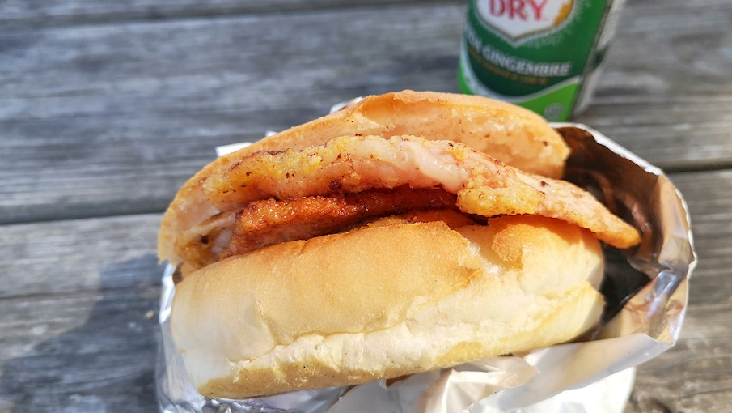
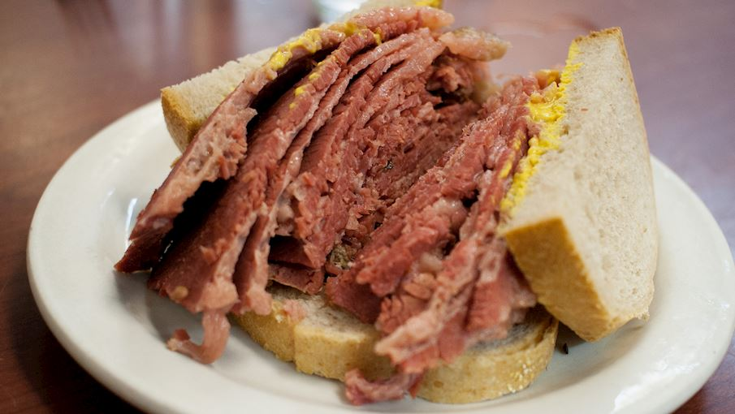
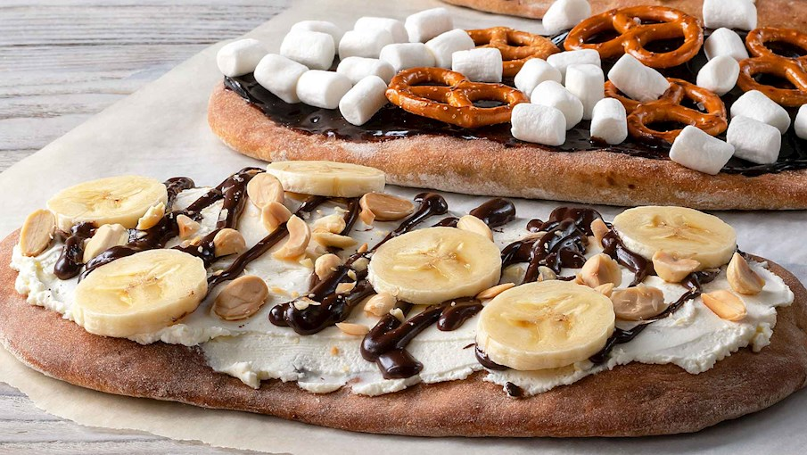
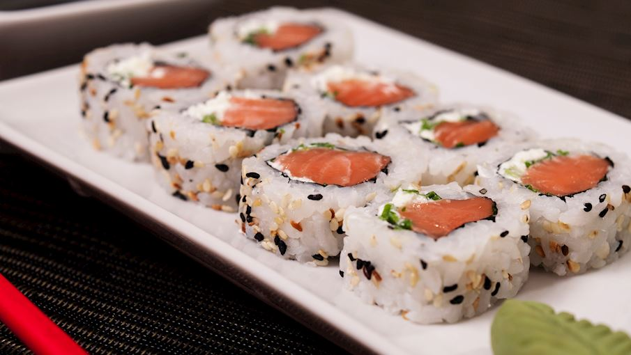

1. Peameal bacon sandwich
Originating from Toronto, this simple sandwich consists of thick slices of fatty and crispy peameal bacon on a Kaiser bun. The bun soaks up the bacon's juices, developing its own meaty texture in the process. The sandwich is usually paired with mustard, and nowadays there are even modern versions with added cheese, eggs, tomatoes, or lettuce.
2. Montreal smoked meat
Montreal smoked meat is a type of deli meat sandwich that originated in Montreal,Canada. It's similar to corned beef and pastrami sandwiches, but the meat used has its own distinct preparation process and flavor profile. Pastrami was invented in Romania, a cured beef product prepared by pickling and smoking the fatty and succulent cuts of brisket, then covering them with a coating of various spices and peppercorns.
3. Beaver tails
Beaver tails are sweet, flat, and thin Canadian pastries made from whole wheat flour. The dough is hand-stretched and shaped to look like a beaver's tail - unsurprisingly, one of Canada's national symbols. The shaped dough is fried (a technique referred to as float-cooking) on canola oil and smothered with butter and a variety of different toppings.
4. Uramaki
Uramaki, California roll, or upside-down sushi is a unique sushi variety which has its origins disputed between Los Angeles and Vancouver, although most people claim that it was invented in California in the 1960s by a Japanese chef named Ichiro Mashita. This sushi roll is prepared with sushi rice, nori, fish (mostly tuna or salmon), avocado, and cucumber. It differs from other sushi types because the rice is on the exterior, wrapped around nori seaweed that is in the inner part and surrounds the filling.
